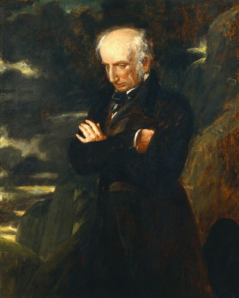
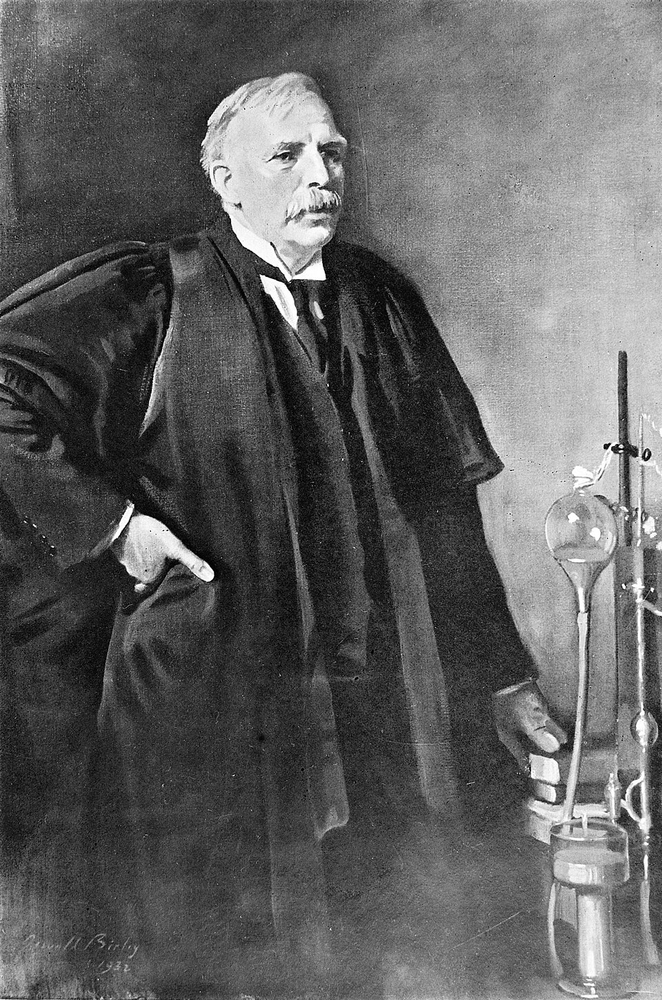
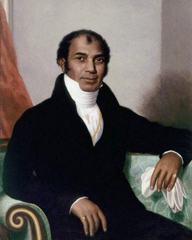

🌼 Wales
Daffodil
Patron saint:St David
St David's Day:1 March
Daffodil
Patron saint:St David
St David's Day:1 March
Shamrock
Patron saint:St Patrick
St Patrick's Day:17 March
Rose
Patron saint:St George
St George's Day:23 April
Thistle
Patron saint:St Andrew
St Andrew's Day:30 November
Capital: Cardiff
Elected members: Senedd Members by closed proportional list
Welsh Government: 60 members
Church: None
Jury: 12
Election: Every 4 years
Capital: Belfast
Elected members: MLAs by Single Transferable Vote
Assembly: 90 MLAs
Church: None
Jury: 12
Election: Every 5 years
Capital: London
Elected members: MPs to UK Parliament by First Past the Post
Church: Yes, Church of England
Jury: 12
Election: Usually every 5 years
Capital: Edinburgh
Elected members: MSPs by Additional Member System
Church: Yes, Church of Scotland
Jury: 15
Election: Every 5 years
Wales
Wales has its own established church.
False
Northern Ireland
Northern Ireland has its own established church.
False
Scotland
What sort of church is the Church of Scotland?
Presbyterian
England
Who is the spiritual leader of the Church of England?
The Archbishop of Canterbury
England
Who is the head of the Church of England?
The monarch
Northern Ireland
When is St Patrick's day celebrated?
17th March
Northern Ireland
St Patrick’s day is a public holiday in Northern Ireland.
True
England
When is St George’s day?
23rd April
UK
What is the correct order of the patron saints' days?
St David, St Patrick, St George, St Andrew
Wales → Northern Ireland → England → Scotland
UK
How often are general elections held in the UK?
Usually every 5 years
Wales
How often are the members of the Welsh government elected?
Every 4 years
Elections
What will you be given to vote before a general election takes place?
A poll card
Canvassing
Which of the following actions is known as “canvassing”?
Persuading people to vote for a political party
UK
What sort of election takes place when a member of the Parliament (MP) dies or resigns?
By-election
Scotland
Is the Scottish Parliament (MSPs) elected by a form of proportional representation?
Yes
Scotland and Northern Ireland
Scotland and Wales use individual registration where each voter completes their own form.
False. Northern Ireland uses individual registration.
Northern Ireland
How are the members of the Northern Ireland Parliament elected?
By a system of proportional representation
Northern Ireland
Northern Ireland uses a system called ‘individual registration’ and all those entitled to vote must complete their own registration form.
True
Devolution
Which two of the following policies are not controlled by the devolved administrations?
Devolution
Which two issues can the devolved administrations pass laws on?
UK nations
What is the Union Jack?
The Flag of the United Kingdom
UK nations
Great Britain refers only to England, Wales and Scotland.
True
Great Britain → England + Wales + Scotland
Great Britain
Which three territories form Great Britain?
Wales
Cardiff is the capital city of which country?
Wales
Northern Ireland
Is Northern Ireland part of Great Britain?
No
UK nations
Where is the UK geographically located?
North west of Europe
UK nations
What name is given to the territories which are linked to the UK but not part of it?
Crown Dependencies
UK territories
Which two of the following are British overseas territories?
UK nations
St Helena and the Falkland Islands are part of Great Britain.
False
Crown dependency
Which of the following is a Crown Dependency but not part of the UK?
Isle of Man
Crown dependency
Which of the following territories is a Crown dependency but is NOT part of the UK?
The Channel Islands
Iron Age
10000 years ago
Stone Age
Who were the first people to live in Britain in what we call the Stone Age?
Hunter-gatherers
6000 years ago
Early Britain
When did the first farmers come to Britain?
6,000 years ago
First farmers → 6,000 years ago
6000 years ago
First farmers
Where did the first farmers come from?
South-east Europe
Iron Age
Early Britain
What was inscribed on the first coins minted in Britain?
The names of Iron Age kings
Iron Age coins → Kings
Iron Age
First coins
Who made the first coins to be minted in Britain?
The people of the Iron Age
AD 60 – 410
55 BC
Roman Britain
Who led the first invasion of Britain?
Julius Caesar
AD 60 – 61
Romans
Boudicca, was a tribal leader who fought against which foreign invaders?
The Romans
Boudicca fought → Romans
AD 60 – 61
Boudicca
Who was the tribal leader who fought against the Romans?
Boudicca
AD 122
Romans
Who built a wall in the north of England to keep out the Picts?
Emperor Hadrian
Hadrian's Wall → Hadrian
AD 122
Romans
Which two forts were part of Hadrian's Wall?
Housesteads and Vindolanda
Hadrian's Wall → (H)ousesteads and (V)indolanda
AD 122
Hadrian's Wall
Which two of these forts were part of Hadrian’s wall?
AD 410 onwards
Early Britain
Which tribes came from northern Europe after the Romans left?
Angles, Saxons and Jutes
Tribe → Roman → (A)ngles, (S)axons and (J)utes
AD 410
Romans
Which tribe came to Britain from northern Europe after the Romans left in AD 410?
The Jutes
Romans leave → Jutes arrive
AD 410
Early Britain
Which tribe came to Britain from northern Europe after the Romans left in AD410?
Angles and Jutes
Romans leave → Angles + Jutes
AD 410
Romans
Which tribe came to Britain from northern Europe after the Romans left in AD410?
AD 597
Roman Britain
Who was the first Archbishop of Canterbury?
St Augustine
AD 878
Anglo-Saxons
Under which king did the Anglo-Saxon kingdoms in England unite to defeat the Vikings?
King Alfred the Great
1066 – 1086
1066
Normans
Which was the last successful foreign invasion of England?
The Norman Conquest
1066 → Norman Conquest → William I wins → from France
1066
Normans
When was the last successful foreign invasion of England?
1066
Last successful invasion → 1066
1066
Normans
Where was William the Conqueror from?
France, as Duke of Normandy
William I → France → Normandy
1066
Normans
Which battle did William I defeated king of Harold?
Battle of Hastings
William I → Battle of Hastings
1066
Normans
Which two records give us information about England during the reign of William I?
The Bayeux Tapestry and The Domesday Book
William I → Bayeux + Domesday
1066
Normans
Which two of the following records give us information about England during the reign of William I?
The Bayeux Tapestry and The Domesday Book
William I → Bayeux + Domesday
1066
Normans
What battle is commemorated in the Bayeux Tapestry?
The Battle of Hastings
Bayeux → Battle of Hastings
1070s onwards
Normans
Who built the Tower of London / White Tower?
William the Conqueror
William I → Tower of London → White Tower
1086
Normans
When was the Domesday Book written?
After the Norman conquest
Norman Conquest (1066) → Domesday Book (1086)
Normans
What English King introduced the Domesday Book?
William the Conqueror
Normans
Which two languages combined to become one English language?
1215 – 1453
Middle Ages
Society
During the Middle Ages, who were the serfs?
Peasants with a small area of their lord's agricultural land.
Serfs → peasants
1215
Rights
What was achieved with the Magna Carta?
It restricted the King's power.
Magna Carta → Limits king's power
1215
Magna Carta
When was the Magna Carta created?
1215
Magna Carta → 1215
1314
Scotland
Who led the Scottish victory over the English at Bannockburn?
Robert the Bruce
(B)annockburn → Robert the (B)ruce
1314
Scotland
In 1314 the Scottish, led by Robert the Bruce, defeated the English at the battle of Bannockburn, and Scotland remained unconquered by the English.
True
Bannockburn → Robert the Bruce → Scotland wins
1314
Bannockburn
Which Scottish king defeated the English at the Battle of Bannockburn?
Robert the Bruce
1337 – 1453
War
What was the long war English kings fought with France in the Middle Ages?
The Hundred Years War
Middle Ages → France → Hundred Years War
1348
Black Death
In 1348, one third of the population in England, Wales and Scotland died as a result of which disease?
The Black Death
1348
Black Death
What kind of disaster was the Black Death?
A plague
1348
Black Death
What proportion of the population died as a result of the Black Death in England?
One third of the population
1348
Black Death
When did the Black Death take place?
The Middle Ages
1455 – 1611
1455 – 1485
Tudors
Which two houses fought in the Wars of the Roses?
1486
Tudors
Who helped unite York and Lancaster by marrying Henry Tudor?
Elizabeth
House of York → Elizabeth of York
1500s
Religion
What movement challenged the authority of the Pope?
The Reformation
Reformation → challenge Pope
1530s
Religion
Who established the Church of England?
Henry VIII
Henry VIII → Divorce → Church of England
1530s
Henry VIII
Why did Henry VIII establish the church of England?
To divorce his first wife, Catherine of Aragon
1533
Henry VIII
Who was the father of Queen Elizabeth I?
Henry VIII
1536
Henry VIII
Where was Anne Boleyn, the wife of Henry VIII, executed?
Tower of London
1542 – 1587
Tudors
Which statement about Mary Stuart, Mary, Queen of Scots, is true?
Mary Stuart was a Catholic
1558 – 1603
Tudors
Which statement about Elizabeth I is true?
She was Protestant and balanced Catholics with more extreme Protestants.
Elizabeth I → Protestant
1558 – 1603
Elizabeth I
What religion did Elizabeth I follow?
She was a Protestant
1560
Church
What kind of church did Scotland establish in 1560?
A Protestant church
Scotland 1560 → Protestant church
1580s
Colonies
Who was reigning when English settlers first began colonising the eastern coast of America?
Elizabeth I
Elizabeth I → Colonise America
1587
Tudors
What happened to ‘Mary, Queen of Scots’ after she spent 20 years in prison?
She was executed
1588
Tudors
During Elizabeth I's reign, which country sent a fleet to conquer England and restore Catholicism?
Spain
Elizabeth I → Spanish Armada → Spain
1588
Spanish Armada
During the reign of Elizabeth I, a large fleet of ships was sent to England to conquer the country and to restore Catholicism, where did this fleet come from?
Spain
Elizabeth I → Spanish Armada came from Spain
1588
Spanish Armada
When did the English defeat the Spanish Armada?
1588
1588
Spanish Armada
Where did the Spanish Armada come from?
Spain
1603
Stuart
James I was King of which country before becoming King of England?
Scotland
James VI Scotland → James I England
1611
Religion
The version of the Bible created by King James I is known as what?
Authorised Version
King James I → Authorised Bible
1642 – 1692
1600s
Religion
What was the religion of the Puritans?
Protestant
Puritans → Protestant
1629 – 1640
Civil War
Charles I believed in the ‘Divine Right of Kings’ so he tried:
To rule without the Parliament
Charles I → rule without Parliament
1642
Civil War
Who fought in the English Civil war of 1642?
The Cavaliers and the Roundheads
1642 – 1651
Civil War
Who supported King Charles I during the Civil War?
Cavaliers
1644 – 1645
Civil War
Which two of the following are Civil War Battles?
1649
Civil War
What happened to Charles I after he was in prison?
He was executed
1649
Civil War
Which king was executed in 1649?
Charles I
1649 → Charles I executed
1649 – 1660
Republic
When was England ruled as a republic and not by a monarch?
After Charles I was executed
Charles I executed → no king → Republic
1653 – 1658
Commonwealth
Who was given the title of Lord Protector?
Oliver Cromwell
Oliver Cromwell → Lord Protector
1651
Civil War
What king was defeated by Oliver Cromwell during the Civil War and hid in an oak tree before escaping to Europe?
Charles II
1651
Restoration
How did Charles II escape to Europe after defeat in the Civil War?
Hiding in an oak tree
Charles II → Royal Oak escape
1660
Restoration
Who came back from exile in the Netherlands to become monarch?
Charles II
Netherlands exile → Charles II
1666
Restoration
During the reign of Charles II parts of London were destroyed, what was the cause of this destruction?
A fire
Charles II reign → London destroyed by fire
1666
Civil War
Who was the architect that rebuilt Saint Paul’s cathedral after the Great Fire in 1666?
Sir Christopher Wren
1679
Rights
What did the Habeas Corpus Act introduce?
Every prisoner has a right to a court hearing.
Habeas Corpus → prisoner
1688
Glorious Revolution
Who was invited to invade and rule England in 1688?
William of Orange
1688 → William of Orange → Glorious Revolution
1688
Revolution
The laws passed after the Glorious Revolution marked the beginning of the ______.
Constitutional monarchy
Glorious Revolution → constitutional monarchy
1688
Glorious Revolution
William of Orange was asked by Protestants to invade England and proclaim himself king. But, when William reached England, there was no resistance and he took over the throne. This event was later Known as:
The 'Glorious Revolution'
1689
Rights
The Bill of Rights in 1689 gave women the right to vote.
False
1689 Bill of Rights → not women's vote
1690
Ireland
Who was defeated at the Battle of the Boyne?
James II
(B)oyne → (J)ames II
1692
Scotland
Which Scottish clan was killed for not taking the oath?
The MacDonalds of Glencoe
Scottish clan killed → MacDonalds
1700s – 1899
1680 – 1720
Huguenots
Between 1680 and 1720 many refugees called Huguenots came to England, which country did they come from?
France
Huguenots → France
1700s
Trade
What country was in conflict with the UK for trading reasons during the 18th century?
France
18th-century trade/empire conflict → Britain vs France
1700s – 1800s
Scotland
What process destroyed many Scottish crofts to make space for sheep and cattle?
The Highland Clearances
Crofts cleared → Highland Clearances
1721
Robert Walpole
Who was the first British Prime Minister?
Sir Robert Walpole
1745
Jacobites
Who was supported by clansmen from the Scottish highlands and raised and army in 1745?
Bonnie Prince Charlie
1745 Jacobites → Bonnie Prince Charlie
1745
Highland clans
During the rebellion of the clans in Scotland, Bonnie Prince Charlie was supported by clansmen from which Scottish region?
Highlands
1770s
American colonies
What led the American colonies to want their independence from Britain?
The British government wanted to tax them
1776
Monarchy
Under whose reign did the 13 North American colonies claim independence?
George III
George III → 1776 → American colonies
1776
American colonies
In 1776, which British colonies declared their independence because they demanded that there should be ‘no taxation without representation’.
North American
1805
Navy
Who was Admiral Nelson?
A British officer in charge of the British fleet at Trafalgar.
Nelson → Navy → Trafalgar
1805
Trafalgar
Who died at the Battle of Trafalgar?
Admiral Nelson
Trafalgar → Admiral Nelson dies
1807 – 1833
Reform
Who was William Wilberforce?
A politician
Wilberforce → politician → anti-slavery campaign
1815
Waterloo
Against which country did Britain fight at the Battle of Waterloo?
France
Waterloo → Britain fought France
1815
Waterloo
What was the last battle between Great Britain and France?
The Battle of Waterloo
1833
Reform
In 1833, the Emancipation Act abolished slavery throughout the British Empire.
True
1833 → slavery abolished in the British Empire
1840s
Ireland
What food shortage caused the famine in Ireland?
Potato
Irish famine → potato shortage
1840s
British Empire
How did the Government promote policies of free trade during the Victorian Age?
Abolishing a number of taxes on imported goods
1851
1700s-1899
What building was constructed in Hyde Park to hold the Great Exhibition of 1851?
The Crystal Palace
1853 – 1856
War
Who did Britain fight against in the Crimean War?
Russia
Crimean War → Britain vs Russia → early media coverage
1853 – 1856
Crimean War
Who did Britain fight against in the Crimean War?
Russia
Crimean War → Russia
1853 – 1856
Crimean War
What was the first war to be extensively covered by the media?
The Crimean War
1853 – 1856
1700s-1899
Who was Florence Nightingale?
A nurse
1858
Ireland
What were Irish people who favoured complete independence from the UK in the 19th century called?
Fenians
Irish independence → Fenians
1899 – 1902
War
Which war took place in South Africa from 1899 to 1902?
The Boer War
Boer War → South Africa → 1899 – 1902
1899 – 1902
Boer War
How do you call the British who went to war in South Africa with settlers from the Netherlands?
Boers
1899
Boer War
In which country of the British Empire did the Boer War (1899-1902) take place?
South Africa
1899
Boer War
Which of the following wars took place between 1899 and 1902 in South Africa?
The Boer War
Early 1900s-1997
1903 – 1918
Voting rights
What did Emmeline Pankhurst fight for?
The right for women to vote
1903
Voting rights
What was the name of the activist group who fought for the women’s right to vote?
Suffragettes
1903 – 1918
Voting rights
Who was Emmeline Pankhurst?
A suffragette
1913
Modern Britain
In 1913, the British government promised ‘Home Rule’ for Ireland, why were changes in Ireland delayed until 1921?
Due to the outbreak of the First World War
1914
Modern Britain
The assassination of the Archduke Franz Ferdinand of Austria in 1914 led to which of the following wars?
The First World War
1918
Voting rights
What year were women first given the right to vote?
1918
Women vote starts → 1918
1918
Voting rights
When did the First World War end?
At 11.00 am on 11th November 1918
1918
Voting rights
Women over the age of 30 were given the right to vote as a result of their contribution towards the war effort. Which war was that?
The First World War
1928
Voting rights
Why is 1928 an important year in women's voting history?
Women were given the right to vote at the age of 21, the same as men.
1928 → women vote at 21
1930s
Great Depression
During the Great Depression in the 1930s which industry was badly affected?
Shipbuilding
Great Depression → shipbuilding badly affected
1939
World War II
When did Germany invade Poland?
1939
1939 → Germany invades Poland → WWII begins in Europe
1939
World War II
World War II started as a result of Germany invading which country?
Poland
1940
World War II
What is known as the Dunkirk spirit?
The evacuation of Allied soldiers from France during World War II.
Dunkirk → rescue → WWII spirit
1940
World War II
Which armed force was used in the Battle of Britain?
The Royal Air Force
Battle of Britain → RAF
1940 – 1941
World War II
What is the name used to for the bombing campaign during WWII when Germany bombed multiple UK cities?
The Blitz
1940
World War II
What sort of battle was the ‘Battle of Britain’, fought between Germany and Britain in the summer of 1940?
An aerial battle
1940
Prime ministers
Who became Prime Minister and was an inspirational leader to the British people during WWII?
Winston Churchill
1944
Education
What did the Butler Act introduce in 1944?
Free secondary education in England and Wales.
Butler Act → 1944 → free secondary school
1945
1945
Who was elected British Prime Minister in 1945?
Clement Attlee
Churchill → wartime PM; Attlee → 1945 Labour PM
International
When was the United Nations set up?
After the Second World War
UN → 1945 → after WWII
1949
Ireland
When did Ireland become a republic?
1949
Ireland republic → 1949
1979 – 1990
Prime Minister
Who was the longest-serving PM in the 20th century?
Margaret Thatcher
Thatcher → 1979 – 1990 → longest 20th-century PM
1979 – 1990
Prime ministers
What was Margaret Thatcher famous for?
She was the first woman Prime Minister of the UK
1979
Prime ministers
Who was the first female Prime Minister of the UK?
Margaret Thatcher
1990s
Politics
Who became Prime Minister after Margaret Thatcher and played an important part in the Northern Ireland peace process?
John Major
John Major → Northern Ireland peace
1997
Devolution
Who was the leader of the Labour Party who introduced a Scottish Parliament and a Welsh Assembly?
Tony Blair
Tony Blair → devolution
2002
Voting rights
Who was voted the greatest Briton of all time in 2002?
Winston Churchill
Constitution
Does Britain have a written constitution?
No
Constitution
Which is not a constitutional institution?
The armed forces
Monarchy
What are TWO responsibilities of the monarch?
Parliament
The system of government in the UK is a parliamentary democracy.
True
UK system → parliamentary democracy
Jury service
How many members does a jury have in England, Wales and Northern Ireland?
12
Jury
How many members form a jury in Scotland?
15
Courts
In England, Wales and Northern Ireland Youth Court cases are normally heard by (choose TWO answers)?
Northern Ireland
The judge of a magistrates' court in Northern Ireland is legally qualified.
True
NI magistrates' court → legally qualified judge
Courts
Which court deals with minor criminal offences in Scotland?
The Justice of the Peace Court
Scotland minor offences → Justice of the Peace Court
Courts
Which court deals with minor criminal cases in England, Wales and Northern Ireland?
Magistrates' Court
Courts
What is the small claims procedure?
An informal way of helping people to settle minor disputes without spending a lot of time and money using a lawyer
Courts
What is the limit for small claims court in Northern Ireland and Scotland?
£5,000
England/Wales → £10,000; Scotland/NI → £5,000
Jury service
How is a jury selected?
Randomly from the electoral register
Jury service
What is the minimum age required to serve on a jury?
18
Jury service
Where should you register if you want to become part of a jury?
The electoral register
Government
Where in the UK government sitting?
Westminster
Government
Where is the official home of the Prime Minister?
10 Downing Street
Government
Who is responsible for crime, policing and immigration?
The Home Secretary
Civil service
How are civil servants appointed and what political party do they belong to?
They are chosen on merit and are politically neutral
Government
Are civil servants appointed by the government?
No
Government
Which two of the following are key roles of school governors?
Police
What should you do to make a complaint about the police (choose two answers)?
Police
Anyone can make a complaint about the police by writing to the Chief Constable of the police force involved.
True
Police complaint → Chief Constable
Police
Police complaints can only be made by writing to the Chief Constable of the police force involved.
False
Police
Complaints against the police can only be made by writing to the Police Complaints Commissioner.
False
Local government
Towns, cities and rural areas in the UK are governed by government appointed officials.
False
Local areas → elected councils
Northern Ireland
The UK government has never suspended the Northern Ireland Assembly.
False
Northern Ireland Assembly has been suspended before
Northern Ireland
How many members does the Northern Ireland Assembly have?
90
Scotland
Is the Scottish Parliament located in Glasgow?
False, it is in Edinburgh
Wales
How many members does the Welsh government have?
60
BBC
Is the BBC controlled by the government?
No
Parliament
During the 18th century, what important role appeared in Parliament?
Prime Minister
18th century → Prime Minister
Parliament
How often are ‘Prime Minister’s Questions’ held in the parliament?
Every week
Parliament
Who chairs the debates at the House of Commons?
The Speaker
Parliament
The Speaker is an MP, represents a constituency and deals with constituents.
True
Speaker → neutral chair + still an MP
MPs
The leader of the opposition appoints senior opposition MPs. They form a group whose role is to challenge the government and put forward alternative policies. What are they called?
Shadow Cabinet
MPs
Which of the following are TWO responsibilities of the MPs?
Parliament
A responsibility of the MPs is to represent everyone in their _______.
Constituency
MPs → represent everyone in their constituency
Parliament
What are MPs called if they do not represent any of the main political parties?
Independents
No party → independent
Parliament
Which two houses form the UK Parliament?
Parliament
The members of the House of Lords, known as peers, are elected by the people.
False
Parliament
Several Church of England bishops sit in the House of Lords.
True
Church of England bishops → House of Lords
Parliament
Who appoints life peers in the House of Lords?
The monarch
Life peers → Monarch
Parliament
What are official reports of proceedings in Parliament called?
Hansard
Parliament reports → Hansard
Parliament
Which two political parties formed a coalition in 2010?
MPs
MPs can only be contacted at their office in the House of Commons.
False
MPs
MPs can only be contacted by post.
False
Music
What is the period of the 1960s known for?
A growth in British fashion and pop music
Pop music
During which period did the Beatles become popular and social laws were liberalised?
1960s
The Beatles
Which two British pop music groups were famous during the Swinging Sixties?
Music
What was Edward Elgar famous for?
He was a musician
Music
What was Sir Edward Elgar primarily famous for?
Composing the Pomp and Circumstance Marches.
Elgar → composer → Pomp and Circumstance
Music
What is the Proms?
An eight-week summer season of daily orchestral classical music concerts.
Proms → summer classical music concerts
New Year
What song is sung when people celebrate the New Year?
Auld Lang Syne
New Year → Auld Lang Syne
Animation
Nick Park has won four Oscars for his animated films, including three for films featuring:
Wallace and Gromit
Film
What kind of movies did Academy Award winner Nick Park specialise in?
Animated movies
Nick Park → Wallace and Gromit → animated movies
Film
What is one of the highest-grossing film franchises produced in the UK?
James Bond
UK film franchise → James Bond → 007
Film
Which UK-produced film franchise was one of the most commercially successful?
Harry Potter
UK film franchise → Harry Potter → Hogwarts
Film
Which of the following actresses has not won an Oscar?
Emily Watson
Dench, Winslet, Swinton → Oscars; Emily Watson → no Oscar
Charlie Chaplin
Who became famous for his tramp character in silent movies?
Charlie Chaplin
Charlie Chaplin
What type of character was played by Charlie Chaplin?
A tramp
Television
Which British TV programme is popular in the UK?
Football
Who was captain of the English football team that won the World Cup in 1966?
Bobby Moore
Motor sports
Damon Hill, Lewis Hamilton and Jenson Button are known for which sports
Motor sports
Formula 1
Which British Grand Prix driver won the Formula 1 World Championship?
Jenson Button
Paralympics
Which Paralympic athlete won swimming golds in 2008, 2012 and 2016?
Ellie Simmonds
Ellie Simmonds → swimming → Paralympic gold
Olympics
What medal did Mary Peters win in the 1972 Olympics?
Gold
Athletics
What made Roger Bannister famous?
First man to run a mile in under four minutes
Sports
Which two of the following are famous British Paralympians?
Horse racing
What is the Grand National?
A famous horse racing event.
Grand National → horse racing; Scottish Grand National → Ayr
Horse racing
Which of the following is a major horse-racing event in England?
Royal Ascot
Ascot → horse racing
Horse racing
Where does the Scottish Grand National take place?
Ayr
Scottish Grand National → Ayr
Horse racing
Where is the National Horseracing Museum located?
Newmarket, Suffolk
Horse racing museum → Newmarket
Golf
Which sport is The Open Championship associated with?
Golf
The Open → golf
Golf
Which sport can be traced back to the 15th century in Scotland?
Golf
Golf
Where does golf come from?
Scotland
Wimbledon
What is the most famous tennis tournament played in the UK?
Wimbledon
Tennis
Which sport is Wimbledon associated with?
Tennis
Wimbledon → tennis
Cricket
What is the name of the most famous cricket competition played between England and Australia?
The Ashes
England + Australia cricket → The Ashes
Rugby
Which sport is the Six Nations Championship associated with?
Rugby union
Six Nations → rugby
Olympics
How many times has the UK hosted the Olympic Games?
3
UK Olympics → 1908, 1948, 2012 → 3 times
Olympics
Which of the following major sports event took place in the UK in 2012?
The Olympic games
Pub games
What kind of games are traditionally played at pubs in the UK?
Pub quizzes, pool, and darts
Boat Race
Which two universities participate in an annual rowing race that takes place on the River Thames?
Arthur Conan Doyle
Who wrote Sherlock Holmes?
Sir Arthur Conan Doyle
J. R. R. Tolkien
Which novel written by JRR Tolkien was voted the country’s best-loved novel in 2003?
The Lord of the Rings
Book awards
The Man Booker Prize is awarded in which of the following categories?
Literature
Poetry

Who wrote The Daffodils and was inspired by nature?
William Wordsworth
William Wordsworth
What flower did William Wordsworth write about?
Daffodil
Literature
What stories are associated with Geoffrey Chaucer?
The Canterbury Tales
Geoffrey Chaucer
Which of the following poems is about a group of people going on a pilgrimage?
The Canterbury Tales
Literature
What type of literature are The Canterbury Tales?
Poems
William Shakespeare
Where was William Shakespeare born?
Stratford-upon-Avon
William Shakespeare
Which of the following plays was written by William Shakespeare?
A Midsummer Night’s dream
William Shakespeare
Which of the following plays was written by William Shakespeare?
MacBeth
Theatre
Where is Theatreland?
London’s West End
Theatre
What is the name of the area in London where famous theatres are located?
Theatreland
Festival
Where does the Fringe festival take place?
Edinburgh
Design
Who was a famous Art Deco ceramic designer?
Clarice Cliff
Clarice Cliff → colourful Art Deco ceramics
Art
Who was an important contributor to the ‘pop art’ movement of the 1960’s?
David Hockney
Art
What is the Turner Prize?
A contemporary art award
Art
Where is the Tate Art Gallery located?
London
National parks
There are 15 national parks in England, Wales and Scotland. What are national parks?
Areas of protected countryside
National parks
How many national parks are there in England, Wales and Scotland?
15
National parks
What UK landmark was voted as Britain’s favourite view in 2007?
Lake District
National parks
Which is the largest National Park in England?
The Lake District
Scotland
Where is Loch Lomond and the Trossachs National Park?
Scotland
Scotland
Where is Skara Brae, the best preserved prehistoric village in northern Europe?
Orkney, Scotland
Scotland
Which of the following castles is located in Scotland?
Crathes Castle
Northern Ireland
Where is the Giant's Causeway located?
Northern Ireland
Northern Ireland
Where is the Giant's Causeway located?
Northern Ireland
England
Which monument is located in Wiltshire?
Stonehenge
Landmarks
Where is Swansea located?
Wales
National parks
Where is Snowdonia located?
Wales
Landmarks
Where is the Eden Project located?
Cornwall
War memorial
What is the name of the War Memorial located in Whitehall?
Cenotaph
Whitehall memorial → Cenotaph
War memorial
Who designed the Cenotaph?
Sir Edwin Lutyens
Cenotaph designer → Lutyens
Tower of London
What is the name of the tour guides that tell visitors stories about the Tower of London’s history?
Beefeaters
Tower of London
Where are the Crown Jewels kept?
At the Tower of London
Tower of London
Where do Beefeaters serve as tour guides?
The Tower of London
Big Ben
Where is Big Ben located?
The Houses of the Parliament
Economics
During the Enlightenment, Adam Smith developed ideas about what?
Economics
Computing
What was invented by Alan Turing in the 1930s?
The Turing machine
Philosophy
What area did David Hume contribute to during the Enlightenment?
Philosophy
Science
What did Isaac Newton discover?
Gravity
Physics

Who led a team of scientists to split the atom for the first time?
Ernest Rutherford
DNA
What did Francis Crick discover?
The structure of the DNA molecule
Cloning
What are Ian Wilmut and Keith Campbell famous for?
Cloning Dolly the sheep
Engineering
What was Isambard Kingdom Brunel responsible for?
The construction of the Great Western Railway
Television
What did the Scottish John Logie Baird develop?
Television
Radar
Who developed radar?
Sir Robert Watson-Watt
Aviation
What did Sir Frank Whittle invent in the 1930s?
Jet engine
Computing
What is the Turing Award?
A computer science award
Printing
Who was William Caxton?
The first person in England to print books using a printing press.
Exploration
Who mapped the coast of Australia?
James Cook
Discoveries
What is the Enlightenment?
A period when new ideas about politics, philosophy and science were developed
World Wide Web
Who invented the World Wide Web?
Sir Tim Berners-Lee
Work
What was the biggest source of employment in Britain before the 18th century?
Agriculture
Industrial Revolution
Which invention led to Britain's development during the Industrial Revolution?
Steam power
Industrial Revolution
Why were canals built during the Industrial Revolution?
To link factories to towns, cities and ports.
Canals → mobility
Work
What was the biggest source of employment during the 18th century?
Manufacturing
Industrial Revolution
What did the Factories Act of 1847 introduce?
It limited the number of hours that women and children could work to 10 hours per day.
British values
Which of the following is a fundamental principle of British life?
Individual liberty
British values
Which two of the following are fundamental principles of British life?
Citizenship
As a British citizen what are your responsibilities (choose two answers)?
Citizen responsibilities → obey law + look after family
Charities
What charity works to preserve important buildings, coastline and countryside in the UK?
The National Trust
Charities
Which of the following charities helps the environment?
Friends of the Earth
Money
What is the name of the UK currency?
Pound Sterling
Currency
Which of the following is not a valid UK coin?
25p
Currency
Which of the following is not a British banknote?
£25
Currency
£100 is the highest value note in circulation in the UK.
False
Currency
Northern Ireland has its own banknotes, which are valid everywhere in the UK.
True
Currency
Scotland has its own banknotes, which are valid everywhere in the UK.
True
Northern Ireland
What is the traditional food of Northern Ireland?
Ulster Fry
Northern Ireland
What dish is made by bacon, eggs, sausages, black pudding?
Ulster fry
Scotland
Haggis is a traditional food from which area?
Scotland
Food culture

Who opened the first curry house in London?
Sake Dean Mahomet
Shop opening
Which of the following statements is correct?
Most shops in the UK open seven days a week.
Public holidays
What is a bank holiday?
A public holiday when banks and many other businesses are closed for the day.
Bank holiday → many are closed
Public holidays
How are public holidays called?
Bank Holidays
Religion
What are the 40 days before Easter called?
Lent
Christian festivals
What is Good Friday?
The day when Jesus Christ died
Christian festivals
When does Easter take place?
March or April
Traditions
What is the day when jokes are published in newspapers and telecasted on TV?
April Fool’s Day
Traditions
When do the television and newspapers have stories that are jokes until midday?
April Fool’s Day
Religious festivals
Which festival celebrates the end of Ramadan, when Muslims have fasted for a month?
Eid al-Fitr
Religious festivals
What other name is given to Diwali?
The Festival of Lights
Religious festivals
Which two of the following religious communities celebrate Diwali?
Traditions
When is Halloween celebrated?
31st of October
Christian festivals
On what day is the birth of Jesus Christ celebrated?
Christmas Day
Christian festivals
When is Christmas Day?
25th of December
Holidays
When is Boxing Day celebrated?
26th December
Traditions
How is New Year’s Eve called in Scotland?
Hogmanay
Traditions
What does Hogmanay refer to?
New Year's Eve in Scotland
Law
Racial crime and smoking in public places are examples of:
Criminal offences
Courts
Which of the following is an example of civil law?
Discrimination in the workplace
Law
Anyone who is violent towards their partner – whether they are a man or a woman, married or living together – can be prosecuted.
True
Marriage
Arranged marriages, where both parties agree to the marriage, are acceptable in the UK ?
true
Marriage
Can court orders be obtained to protect a person from being forced into a marriage?
Yes
Forced marriage protection → court orders
Law
If a husband forces his wife to have sex he can be charged with rape.
True
Law
The names or photographs of young people found guilty of a crime can be published in newspapers or used by the media.
False
Law
Female genital mutilation (FGM) or taking a girl or woman abroad for FGM is illegal in the UK and it is a criminal offence.
True
TV licence
Do I need a TV license if I only watch TV on a computer?
yes
Law
How old do you have to be to buy alcohol in the UK?
18
Law
How old do citizens of the UK, the Irish Republic or the Commonwealth have to be to stand for public office?
18
Law
You have to be at least 21 years old to stand as MP.
False
Law
How old do you have to be to go into betting shops or gambling clubs?
18
Law
In the UK, you have to be 21 years old to be able to vote in a general election.
False
Law
By law, radio and television coverage of the political parties must be balanced and so equal time has to be given to rival viewpoints.
True
Law
If you think someone is trying to persuade you to join an extremist or terrorist activity, who should you contact?
Your local police force
Law
If you are a dog owner, which two things should your dog’s collar have when you go out for a walk?
Law
When walking your dog in a public place, you must ensure:
That your dog wears a collar showing the name and address of the owner
Government
Which two documents do you need to apply for a National Insurance number?
Government
What do you need to do to apply for a National Insurance Number?
Contact the Department for Work and Pensions (DWP)
Government
Who can apply for the National Citizen Service programme?
16- and 17-year-olds
Government
It is compulsory for 16 and 17-year-olds to join the National Citizen Service programme.
False
Road rules
What is the minimum age required to drive a motorcycle?
17 years old
Road rules
How old do you have to be to drive a moped in the UK?
16 years old
Driving licence
What do you need to drive in the UK?
A valid driving licence
International
What is the primary purpose of NATO?
To maintain peace between all of its members.
NATO → defence alliance → peace and security
International
What is the Commonwealth?
An association of countries that support each other and work together towards shared goals in democracy and development.
Commonwealth → countries cooperate → democracy + development
Aviation
Which country helped Britain to develop Concorde?
France
Work
Which of the following statements is true:
Women in Britain today make up about half of the workforce.
Population
What percentage has a parent or grandparent born outside the UK?
Around 10%
Courts
Which of the following statements is correct?
Solicitors' charges are usually based on how much time they spend on a case